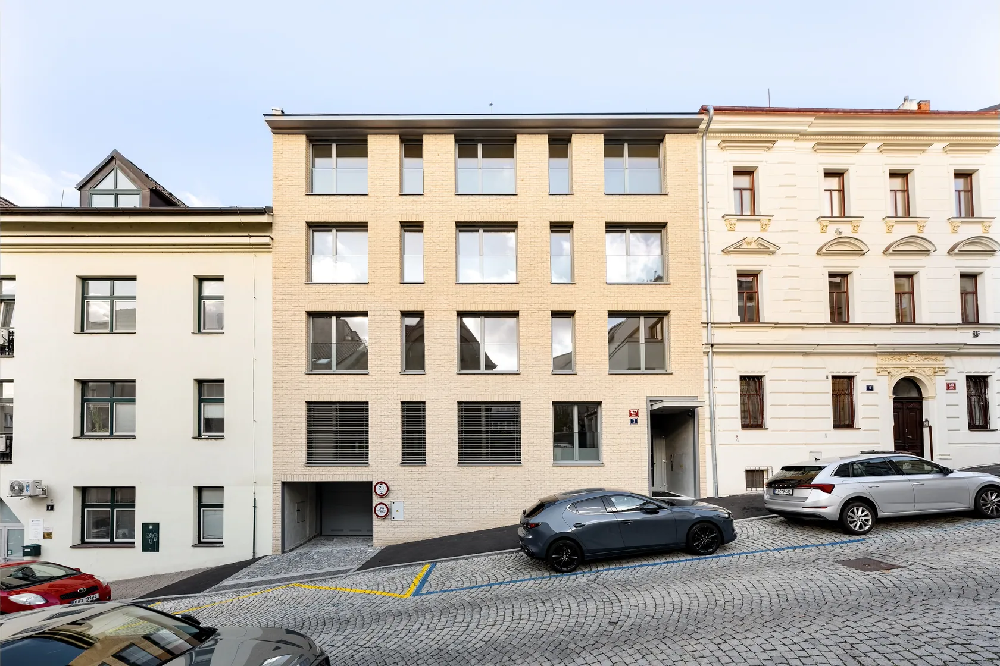
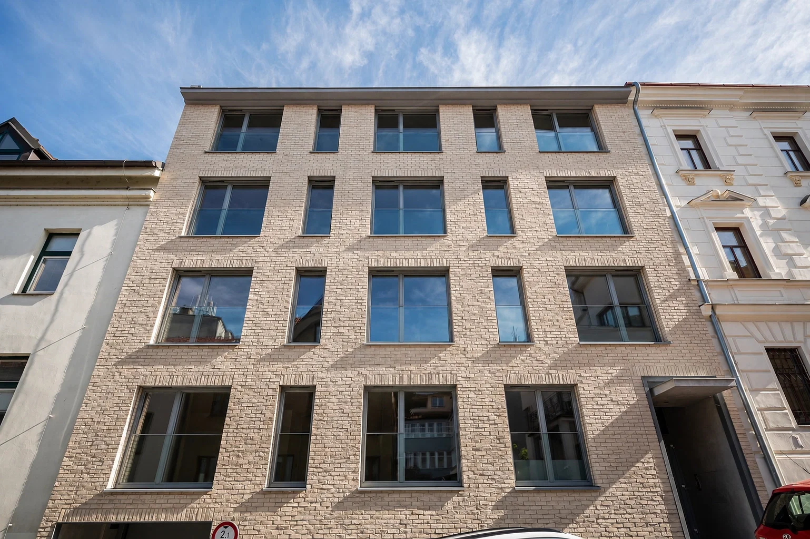

Nad
Sokolovnou 3
Praha 4, Podolí
Pět bytů v jednosměrné ulici. Obývací pokoje mají okna do ulice, ložnice s lodžiemi do vnitrobloku.

- Stav domu
- Zkolaudováno, k nastěhování
- Stavba
- Skeletová konstrukce, fasáda z lícových cihel
- Okna
- Dřevohliníková s trojskly a venkovními žaluziemi
- Podlahy
- Třívrstvý dub Esco, podlahové vytápění
Byty a půdorysy
Podlaží otevřete kliknutím na dům.

Detail uliční fasádyVe 2. NP jsou dva byty. Mezonet 4.1 zabírá 4. a 5. NP.
Ceny a dostupnost bytů
Podlahové plochy nezahrnují lodžie a terasy. Ceny a dostupnost podle podkladů k 11. 11. 2026. Aktuální stav potvrdí Jan Chundela.